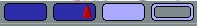
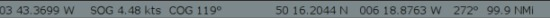
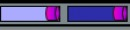
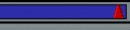
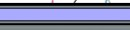
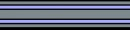
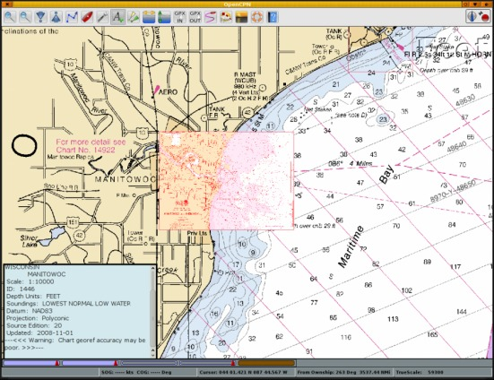

Chart Status Bar


At the bottom of the display, is the Status Bar, activated from “Options→User Interface→Show Status Bar”.
Just above the Status Bar is the 'Chart Selection Bar'. Ctrl+B toggles this bar on/off.
It shows all the available chart for the present view, represented by one colored segment for each chart. The order between the segments represents the scale of the charts. Largest scale to the left, smallest to the right. If CM93 is available, it is always furthest to the right.
The segmented color bars in the Status Bar represent:
- Blue for Raster
- Green For ENC's
- Brown/Yellow for CM93 charts
- The current chart displays as a lighter shade of its color, or if quilting is active, the charts currently making up the quilt are displayed in lighter shade.
- The Chart bar below consisting of 12 segments shows a quilt of two active charts. Five charts in the quilt are hidden, due to small scale. CM93 is in it's place, to the right. Four charts of larger scale than the present view are available. The largest scale chart is a Transverse Mercator chart.

Limitation
The Chart Bar handles a maximum of 100 charts. The largest scale charts will be dropped first if more than 100 chart are available on a position. It is unlikely that this will be much of a limitation, but the possibility certainly exists if a lot of info charts, pilot charts and weather charts etc, are loaded. The symptom will be that large scale charts becomes impossible to display.
When you hover the mouse pointer over the bar, and not in quilting mode, a thumbnail of the chart will appear under the Scaling Charts icons and a chart information box will pop up just above the button. If quilting is on, instead of a thumbnail, the chart represented by the button will be highlighted in a transparent reddish color. By clicking on the appropriate bar, or using the appropriate Keyboard Shortcuts, you will switch to the chart shown in the thumbnail. This feature is especially useful if you wish to view an ENC or a Raster chart of the same area.

The bottom line starting from the left, a bar, that imitates a paddle wheel, if a gps position is received, and the gps position. Then follows SOG, COG, the position of the cursor, and course and distance from the gps position to the cursor. To the far right there is true Scale of the display and the Zoom Factor. The Zoom factor is the Scale (as above) divided with the natural scale of the chart.
The buttons, or colored segments, are displaying a lot more information however.

These buttons shows that the two charts are Transverse Mercator, and that single char mode is used as the corners of the segments are not rounded.

This button indicates that the chart is a Polyconic chart.

This button shows that the chart is Skewed, meaning that north is not up on the chart.
This chart is excluded from quilting because of user action. Right click to include in quilting again. Notice the rounded corners due to quilt mode.

The raster chart represented by this button don't participate in the quilt because it is hidden by other, larger scale charts. Vector charts are represented similar.
To illustrate a lot of this, here is a screen shot in quilting mode.

The screen is a quilt of two Polyconical charts. Hovering the mouse pointer over the left chart-button highlights the lager scale chart for Manitowoc. Two smaller scale charts that cover the area displayed on the screen are included in the quilt, but are invisible as they are covered by the larger scale charts. To view these charts, right-click anywhere on a chart in the quilt and select “Remove this chart from quilt”, one of these charts will now be shown in the quilt.
The Brown right most button shows that CM93 version 2, charts are available for the area, but not currently displayed.
The information box shows relevant information about the chart.
To Hide the Chart Bar
Use these hotkeys: Ctrl + B hide/show the Chart Bar.